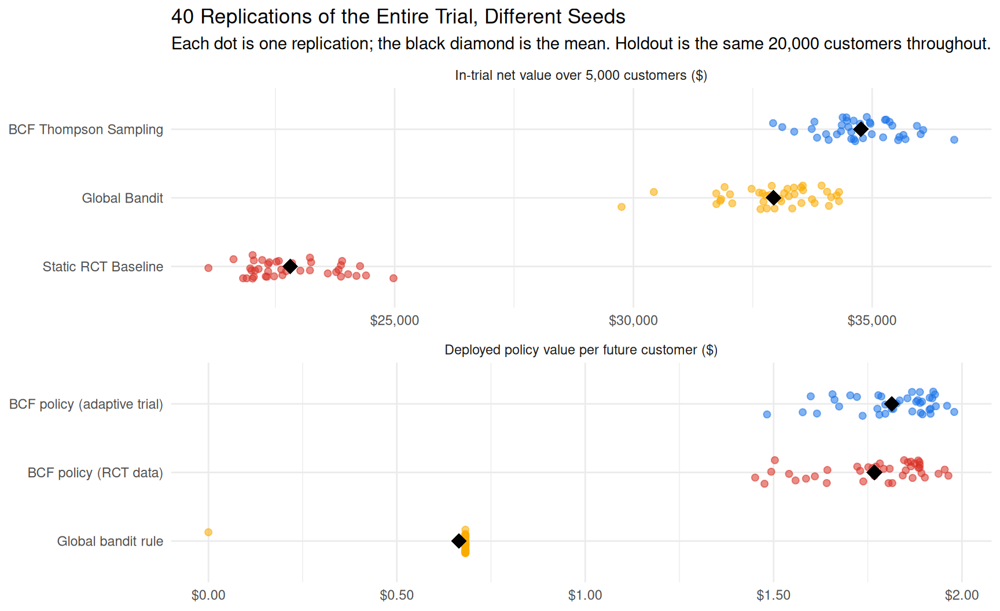

library(tidyverse)
library(stochtree)
library(patchwork)
library(furrr)25 Bayesian Adaptive Design
Contextual Multi-Armed Bandits with Multivariate Bayesian Causal Forests
25.1 The Business Dilemma: The Cancellation Desk

Imagine you are the Principal Data Scientist at a subscription-based platform—whether a streaming service, an enterprise SaaS tool, or a cloud developer product. Every week, roughly 500 paying subscribers contact customer support or enter the cancellation flow intending to terminate their subscription.
Customer churn is the silent killer of recurring-revenue business models. To combat this, your Customer Success and Growth teams have brainstormed four candidate actions (a control and three active treatments):
- Arm 0: Control (Standard Exit): Standard cancellation survey and polite exit interview. No financial incentive or special intervention. Cost = $0.
- Arm 1: Bill Credit / Discount: A $5 billing credit on their upcoming invoice. Highly effective for price-sensitive, long-tenure subscribers who have lower recent platform usage. Cost = $5.
- Arm 2: Premium Feature Upgrade: A complimentary 2-month upgrade to the advanced feature tier. Highly effective for heavy-usage subscribers early in their customer lifecycle who are bumping against product limits. Cost = $8.
- Arm 3: Proactive Onboarding Assist: A 1-on-1 technical setup and onboarding session. Highly effective for brand-new subscribers with low initial engagement who are struggling to adopt the product. Cost = $2.
Here is the central challenge: The optimal retention offer is completely different for different customers, but on Week 1, you have zero empirical information about what works for whom.
25.2 What “Adaptive Design” Means in This Chapter
An adaptive design is an experiment whose rules for what to do next are fixed in advance but depend on the data collected so far. The family is broad. Interim analyses can stop a trial early for success or futility, drop arms that are clearly losing, re-estimate the sample size, or—the branch this chapter is about—shift the probability of assignment toward arms that are doing well, which is called response-adaptive randomization. What makes a design Bayesian is that those rules are driven by posterior quantities: the posterior probability that an arm is best, or a posterior draw of its effect.
This chapter builds one specific member of that family and follows it end to end: a response-adaptive experiment in which the allocation probabilities depend not only on the accumulating outcomes but on each customer’s covariates, so that different customers are steered toward different arms. In machine-learning language this is a contextual bandit; in the evaluation literature it is the “what works for whom” design of Finucane et al. (2018). The trial runs for a fixed ten weeks with no early-stopping rule, and one allocation rule—Thompson sampling with an exploration floor—is used throughout. That scope matters. The lessons below, about propensities, exploration floors, and what adaptive allocation does and does not buy, are about this design, not a verdict on adaptive designs in general.
25.3 The Economic Objective: Net Value, Not Just Raw Retention
It is tempting to define success as the retention rate. But in business data science, interventions have real marginal costs, and an offer that saves a customer for more than that customer is worth has not succeeded.
Suppose each successfully retained subscriber represents $25 in Net Customer Lifetime Value (LTV). If an expensive $8 feature upgrade increases a customer’s retention probability by only 10 percentage points, its expected gross uplift value is:
\[ \mathbb{E}[\text{Uplift Value}] = 0.10 \times \$25 = \$2.50 \]
Because the treatment costs $8.00, deploying it to that customer produces a net loss of $5.50 per customer treated.
Therefore, the rational business objective is not merely to maximize retention probability, but to maximize Incremental Net Economic Value:
\[ \text{Net Value}_k(X) = \tau_k(X) \times \text{LTV} - \text{Cost}_k \]
Where:
- \(\tau_k(X) = \mathbb{E}[Y(k) - Y(0) \mid X]\) is the Conditional Average Treatment Effect (CATE) of arm \(k\) relative to Control: the uplift in retention probability, in percentage points.
- \(\text{LTV}\) is the monetary value of saving a customer ($25).
- \(\text{Cost}_k\) is the direct operational cost of treatment \(k\) ($0, $5, $8, and $2, respectively).
Notice that for Arm 0 (Control), \(\tau_0(X) \equiv 0\) and \(\text{Cost}_0 = \$0\), yielding a baseline net value of \(\$0\). If every active treatment produces a negative net value for a customer, the cost-effective decision is to do nothing (Control).
Two simplifications are baked into this objective, and both are worth stating out loud because the simulation below inherits them. Every saved customer is worth the same $25, regardless of who they are, and the cost of an offer is incurred for every customer it is made to, whether or not they stay. Neither is essential to the method: an LTV that varies with \(X\), or a cost that is only paid when the customer is retained, changes the arithmetic inside the \(\arg\max\) but not the logic of anything that follows.
25.4 The Three-Way Strategic Showdown
When designing an experimentation strategy for this problem, data science teams typically choose between three approaches:
| 1. Static RCT | 2. Global MAB | 3. BCF Thompson Sampling | |
|---|---|---|---|
| Allocation | Fixed 25% per arm, for the whole run | Adapts, but pools every customer together | Adapts per customer, on their covariates |
| What it learns | Data on every arm for every kind of customer, free of assignment bias | A single population-average winner | The full CATE surface \(\tau_k(X)\) |
| In-trial cost | High regret throughout | Converges fast, then exploits | Pays to explore first, profits later |
| Failure mode | Burns revenue for the entire trial | Starves the segments it did not crown | Buys its model with in-trial revenue; can trail a simple bandit for weeks |
| What you own at the end | Data, and a model you still have to fit | One winning arm | A deployable personalized policy |
1. Static RCT Baseline (Uniform 25% Allocation)
In a fixed, equal-allocation A/B/C/D test, you divide incoming traffic equally (125 callers per arm each week) for a fixed period (e.g., 10 weeks). Every caller has one best arm, and a uniform coin flip gives it to them 25% of the time, so for the entire ten weeks three callers in four receive an offer that is not their best one. Statistically straightforward; commercially expensive. We put a precise price on it below.
2. Global (Non-Contextual) Multi-Armed Bandit
Product teams often ask: “Why not just run an off-the-shelf multi-armed bandit?” The version we simulate is the textbook one, Beta-Bernoulli Thompson sampling on each arm’s retention rate, with costs subtracted before arms are compared. When treatment effects are heterogeneous, a global bandit suffers from a winner-takes-all failure mode. It pools all customers together and converges to whichever single arm has the best population-average net value. In the simulation below that turns out to be Arm 3, the cheap Onboarding Assist — a perfectly sensible average bet, which is exactly what makes the failure mode so hard to spot on a dashboard. Having crowned it, the bandit hands Onboarding to nearly every caller: long-tenure price-sensitive subscribers never see the credit that would have kept them, power users bumping against feature limits never get the upgrade, and the sizeable group who would have stayed anyway gets a $2 offer they never needed. It is right for roughly a third of the base and wrong for the rest.
3. Personalized Contextual Bandit via Bayesian Causal Forests (BCF)
By pairing response-adaptive randomization (Finucane et al. 2018) with Bayesian Causal Forests (Hahn et al. 2020), in the multivariate-treatment form implemented by stochtree (Herren et al. 2024), we model the multi-treatment CATE landscape \(\boldsymbol{\tau}(X) = (\tau_1(X), \tau_2(X), \tau_3(X))^\top\) over continuous customer features \(X\). For every incoming caller, we take one draw \(s\) from the BCF posterior and route them to the treatment with the highest sampled net economic return:
\[ A_i = \arg\max_{k \in \{0, 1, 2, 3\}} \left( \tilde{\tau}_k^{(s)}(X_i) \times \text{LTV} - \text{Cost}_k \right) \]
with \(\tilde{\tau}_0^{(s)} \equiv 0\) for Control.
25.5 Why Multivariate BCF is Built for Adaptive Experimentation
As introduced by Hahn et al. (2020), Bayesian Causal Forests decompose the outcome into a prognostic term and a treatment-effect term. In the multivariate-treatment form implemented in stochtree:
\[ Y_i = \mu\left(X_i, \hat{\boldsymbol{\pi}}(X_i)\right) + \sum_{k=1}^K \tau_k(X_i) Z_{i, k} + \epsilon_i \]
Here \(K = 3\) indexes the active arms; Control is the reference level, encoded as \(Z_i = (0, 0, 0)\), so the four candidate actions of the business problem become three treatment contrasts plus a baseline. \(\hat{\boldsymbol{\pi}}(X_i) = (\hat\pi_1(X_i), \hat\pi_2(X_i), \hat\pi_3(X_i))\) is the assignment-probability vector — one entry per active arm, not a single scalar. Keeping it a vector matters in the code below.
In a response-adaptive trial the assignment probabilities \(\boldsymbol{\pi}(X)\) change as the model learns, and they change differently for different customers: by Week 5, a long-tenure light user and a brand-new power user face very different odds of receiving each offer. Which arm a caller gets is therefore a function of the same covariates that drive their baseline retention, plus a coin flip. Conditioning on \(X\) is enough in principle to remove that confounding, because \(X\) is all the assignment rule ever looked at. In practice, a single regularized model of \(\mathbb{E}[Y \mid X, Z]\) — a penalized regression, a pooled random forest — has to decide how much of the outcome difference between callers who got an offer and callers who did not is the offer, and how much is their covariates, and regularization settles that question in whichever direction makes the fit simpler. Hahn et al. (2020) call the resulting bias Regularization-Induced Confounding (RIC), and it is most severe precisely when assignment tracks the covariates that predict the outcome — which is what adaptive allocation, by design, makes happen.
BCF is built to address this, and three of its design choices matter here:
- The propensity is a covariate of the prognostic forest. \(\mu(X, \hat{\boldsymbol{\pi}})\) sees the design probability of every active arm. In our trial those probabilities are known by construction (Practical Lesson 3), so the one input BCF normally has to estimate is handed to it exactly. This does not make confounding disappear; it gives the prognostic forest a cheap way to represent whatever outcome variation lines up with the assignment rule, so that variation does not get pushed into the treatment forest. Feeding the design probabilities to a forest as covariates is one of the two ways Dimakopoulou et al. (2018) propose to balance a forest-based contextual bandit against the bias that adaptive data collection induces; the other is to weight each observation by its inverse propensity, which
stochtreealso supports throughobservation_weights. - Separate forests with separate priors. The prognostic and treatment forests are regularized differently. By default the treatment forest is smaller and shallower (100 trees of depth at most 5, against 250 trees of depth at most 10) and its split prior is far more conservative, so it shrinks toward simple, nearly homogeneous effects unless the data insist otherwise. On an adaptively collected dataset, where some arms are thinly sampled in some regions, that conservatism is what keeps the model from hallucinating heterogeneity.
- Vector-valued leaves for multiple arms. With three treatment contrasts,
stochtreefits a single treatment forest whose leaves each hold a vector of three effects. All arms share the tree’s partition of the covariate space, and each leaf stores one coefficient per arm, so the arms borrow strength about where effects change while keeping their own magnitudes.
Because the model is Bayesian, Thompson sampling (Thompson 1933; Russo et al. 2018) comes almost for free: draw one posterior sample of \(\boldsymbol{\tau}(X_i)\) per caller, route them to the arm with the highest sampled net value, and exploration is governed by posterior uncertainty rather than by a hand-tuned exploration rate. An arm keeps receiving traffic in proportion to the posterior probability that it is the best one for this caller. The randomization is not only how the design explores; it is also what keeps the data usable. Dimakopoulou et al. (2018) find that Thompson sampling’s randomized assignment makes the arms’ outcome models easier to estimate than the deterministic assignment of upper-confidence-bound rules, and that the difference shows up as lower regret. We still add a small \(\epsilon\)-floor on top of it; Practical Lesson 2 explains why.
One modeling choice deserves a sentence, because the code does not announce it. Retention is binary, and we fit BCF with its default Gaussian likelihood and identity link rather than a probit model. That makes it a tree-based linear probability model: \(\mathbb{E}[Y \mid X, Z]\) is the retention probability itself, so \(\tau_k(X)\) is directly the uplift in probability that the net-value rule needs, with no back-transformation. The price is a constant error variance that a Bernoulli outcome does not really have, and fitted probabilities that are not confined to \([0, 1]\). For a routing decision, which only needs the arms ranked correctly, that is a good trade. stochtree can also fit BCF with a probit link (outcome_model = OutcomeModel("binary", "probit") inside general_params); with it, \(\tau\) lives on the latent probit scale and the probability-scale uplift has to be reconstructed from \(\mu\) and \(\tau\) together.
25.6 Simulating the Continuous Customer Environment in R
Let’s simulate a continuous customer feature space:
- \(X_1 \in [0, 10]\): Customer Tenure (in months).
- \(X_2 \in [0, 10]\): Monthly Platform Usage (in tens of hours).
We will run a 10-week simulation with 500 callers per week (5,000 total customers), comparing BCF Thompson Sampling, a Global Non-Contextual Bandit, and a Static RCT. Each week, all three strategies face the same 500 callers — the same tenure and usage draws, the same true best arms — and differ only in which arm they assign and in the independent coin flips that decide whether each caller stays. Differences between strategies are therefore never differences in who happened to show up.
Step 1: Defining the Ground Truth Environment
set.seed(42)
# Economic constants
SAVED_CUSTOMER_LTV <- 25.0
ARM_COSTS <- c(0.0, 5.0, 8.0, 2.0)
ARM_NAMES <- c(
"Arm 0: Control", "Arm 1: $5 Credit",
"Arm 2: 2-Mo Upgrade", "Arm 3: Onboarding Assist"
)
ARM_COLORS <- c("#70757a", "#4285f4", "#ea4335", "#34a853")
# Minimum exploration probability enforced on every arm once the
# BCF model starts routing customers (Practical Lesson #2 below).
EPSILON_FLOOR <- 0.05
# Customer generator: continuous tenure X1 and usage X2
generate_customers <- function(n, week = 1) {
tibble(
week = week,
customer_id = paste0("W", week, "_", seq_len(n)),
tenure = runif(n, 0, 10), # Months (0 to 10)
usage = runif(n, 0, 10) # Active hours / 10 (0 to 10)
)
}
# Baseline retention probability under Control (Arm 0). Rises with
# tenure and usage, spanning roughly 10%-53%: these are callers who
# have already entered the cancellation flow, so most of them leave
# if you do nothing.
#
# The coefficients are deliberately chosen so that p_base(X) plus
# the largest uplift any arm can deliver never exceeds 1. That is
# not cosmetic: if we had to clip p_base + tau into [0, 1], the
# *realised* uplift would be smaller than tau wherever the clip
# bites, and `true_cate_uplift()` below would no longer be the true
# CATE of the process generating our data. Every "ground truth"
# claim in this chapter would then be measured against a quantity
# the simulation never actually produced. We assert this explicitly
# in `draw_outcomes()` rather than trusting the arithmetic.
true_baseline_retention <- function(df) {
x1 <- df$tenure
x2 <- df$usage
logits <- -2.2 + 0.085 * x1 + 0.095 * x2 + 0.005 * (x1 * x2)
1 / (1 + exp(-logits))
}
# True CATE uplift in retention probability for Arms 1, 2, 3
# (in probability units: 0.36 is a 36 percentage-point uplift).
true_cate_uplift <- function(df) {
x1 <- df$tenure
x2 <- df$usage
n <- nrow(df)
tau <- matrix(0, nrow = n, ncol = 4)
# Arm 1 ($5 Credit): Peak at Tenure=7.5, Usage=2.5 (up to +36 pp)
tau[, 2] <- 0.36 * exp(-0.06 * (x1 - 7.5)^2 - 0.08 * (x2 - 2.5)^2)
# Arm 2 (Feature Upgrade, $8 Cost): Peak at Tenure=2.5, Usage=7.5
# (up to +48 pp)
tau[, 3] <- 0.48 * exp(-0.08 * (x1 - 2.5)^2 - 0.06 * (x2 - 7.5)^2)
# Arm 3 (Onboarding Assist, $2 Cost): Peak at Tenure=2.0, Usage=2.0
# (up to +32 pp). Its bump is the widest of the three, so it is
# also the arm with the best *population-average* net value - which
# is exactly the trap the non-contextual bandit walks into below.
tau[, 4] <- 0.32 * exp(-0.05 * (x1 - 2.0)^2 - 0.05 * (x2 - 2.0)^2)
return(tau)
}
# True net economic values: tau_k(X) * LTV - Cost_k
compute_true_net_values <- function(df) {
tau <- true_cate_uplift(df)
sweep(tau * SAVED_CUSTOMER_LTV, 2, ARM_COSTS, "-")
}
# True optimal arm per user (0-based). Exact ties have probability
# zero with continuous covariates, so a deterministic tie-break
# keeps this function free of random-number use.
get_true_optimal_arms <- function(df) {
net_vals <- compute_true_net_values(df)
max.col(net_vals, ties.method = "first") - 1
}
# Single outcome generator shared by all three strategies, so no
# strategy can accidentally be simulated under a different DGP.
# The stopifnot() is the guard rail described above: if a tuning
# change ever pushes a retention probability outside [0, 1], the
# chapter fails loudly instead of silently redefining its own
# ground truth.
draw_outcomes <- function(p_base, tau_mat, arms) {
n <- length(arms)
p <- p_base + tau_mat[cbind(seq_len(n), arms + 1)]
stopifnot(all(p >= 0 & p <= 1))
rbinom(n, 1, p)
}Visualizing the Ground Truth Optimal Decision Landscape
Let’s visualize the ground truth optimal action across the continuous 2D customer space:
# Generate a dense 2D evaluation grid
grid_df <- expand.grid(
tenure = seq(0, 10, length.out = 120),
usage = seq(0, 10, length.out = 120)
)
grid_df$optimal_arm <- factor(
get_true_optimal_arms(grid_df), levels = 0:3, labels = ARM_NAMES
)
ggplot(grid_df, aes(x = tenure, y = usage, fill = optimal_arm)) +
geom_raster(interpolate = TRUE) +
scale_fill_manual(values = setNames(ARM_COLORS, ARM_NAMES)) +
labs(
title = "Ground Truth Optimal Action Landscape (Net Value)",
subtitle = paste(
"Distinct customer regions require different retention",
"interventions"
),
x = "Customer Tenure (Months)",
y = "Monthly Usage (x10 Hours)",
fill = "Optimal Action"
) +
theme_minimal(base_size = 11) +
theme(legend.position = "right")
Notice that every single arm—including Arm 0 (Control)—has a distinct territory. Because customers are spread uniformly over the square, the share of the grid each arm owns is also the share of the customer population it is best for:
- Arm 0 (Control) — 29% — dominates wherever no treatment produces enough uplift to overcome its cost.
- Arm 1 ($5 Credit) — 20% — dominates for veteran, lower-usage users.
- Arm 2 (Feature Upgrade) — 15% — dominates for newer power users. It has the largest raw uplift of any arm (+48 percentage points at its peak) but also the highest cost ($8), so its profitable territory is the smallest of the four.
- Arm 3 (Onboarding Assist) — 36% — dominates for brand-new, low-usage users.
No single arm is right for even 40% of the population. That is the whole problem in one sentence. And here is the trap in one more: averaged over the whole population, giving every caller the same arm is worth -$2.27 per customer for the Credit, -$4.36 for the Upgrade, and $0.67 for Onboarding Assist (Control is $0.00 by definition). Onboarding is the only active arm that pays on average, which is exactly why a non-contextual bandit is going to crown it.
Step 2: The Multi-Arm Adaptive Simulation Engine
The helpers at the top of this chunk are shared by everything that follows: the weekly refits inside the trial, the final policy model in Section 6, and the replications in Section 7 all fit and predict through the same three functions, so no two parts of the chapter can drift onto different model settings.
# ------------------------------------------------------------------
# Shared model helpers
# ------------------------------------------------------------------
# 3D treatment indicator basis Z in {0, 1}^3. Arm 0 is the reference
# level (0, 0, 0), so the four candidate actions become three
# treatment contrasts plus a baseline.
make_Z <- function(arms) {
Z <- matrix(0, nrow = length(arms), ncol = 3)
for (k in 1:3) Z[arms == k, k] <- 1.0
Z
}
# Deliberately light sampler settings so the chapter renders in
# minutes; a production fit should use far more draws and check
# convergence (see the BCF chapter's traceplot).
BCF_SETTINGS <- list(num_gfr = 10, num_burnin = 150, num_mcmc = 200)
# Fit the multivariate BCF. `df` must carry the design probability
# of *every* arm in the matrix column `alloc_prob`.
fit_bcf <- function(df, seed) {
bcf(
X_train = as.matrix(df[, c("tenure", "usage")]),
Z_train = make_Z(df$assigned_arm),
y_train = df$retained,
# The prognostic forest conditions on the assignment-probability
# *vector* pi(X) = (pi_1, pi_2, pi_3), one column per active arm,
# matching the columns of Z. Handing BCF a single number - say,
# the propensity of whichever arm the customer happened to
# receive - would be a post-randomisation quantity, not a
# function of X alone, and would leak the realised assignment
# into the prognostic term.
propensity_train = df$alloc_prob[, 2:4, drop = FALSE],
num_gfr = BCF_SETTINGS$num_gfr,
num_burnin = BCF_SETTINGS$num_burnin,
num_mcmc = BCF_SETTINGS$num_mcmc,
general_params = list(num_threads = 2, random_seed = seed)
)
}
# CATE predictions for new customers: an [n, 3, num_mcmc] array of
# posterior draws, or an [n, 3] matrix of posterior means. The CATE
# term involves neither Z nor the propensity, but predict() requires
# both arguments, so we pass placeholders.
predict_cate <- function(fit, df, type = "posterior") {
n <- nrow(df)
predict(
fit,
X = as.matrix(df[, c("tenure", "usage")]),
Z = matrix(0, nrow = n, ncol = 3),
propensity = matrix(0.25, nrow = n, ncol = 3),
terms = "cate",
type = type
)
}
# Net-value matrix [n, 4] from an [n, 3] CATE matrix: Arm 0 has zero
# uplift and zero cost.
net_value_from_cate <- function(tau_mat) {
sweep(cbind(0, tau_mat) * SAVED_CUSTOMER_LTV, 2, ARM_COSTS, "-")
}
# The deployed policy: route each customer from the posterior *mean*
# CATE, with no exploration. Returns 0-based arms.
greedy_policy <- function(fit, df) {
tau_hat <- predict_cate(fit, df, type = "mean")
max.col(net_value_from_cate(tau_hat), ties.method = "first") - 1
}
# ------------------------------------------------------------------
# The trial
# ------------------------------------------------------------------
simulate_experiment_suite <- function(n_weeks = 10, n_per_week = 500,
warm_start_weeks = 1, seed = 42) {
set.seed(seed)
bcf_records <- list()
global_records <- list()
rct_records <- list()
# Global bandit state (Beta-Bernoulli priors)
global_alpha <- rep(1, 4)
global_beta <- rep(1, 4)
for (w in seq_len(n_weeks)) {
cohort <- generate_customers(n_per_week, week = w)
cohort$true_opt_arm <- get_true_optimal_arms(cohort)
p_base <- true_baseline_retention(cohort)
tau_mat <- true_cate_uplift(cohort)
# -----------------------------------------------------------
# Strategy 1: Static RCT Baseline (Uniform 25% Allocation)
# -----------------------------------------------------------
rct_cohort <- cohort
# Exactly n/4 callers per arm each week (a permuted block), not
# an i.i.d. coin flip - this is what "125 per arm" means.
rct_cohort$assigned_arm <- sample(rep(0:3, each = n_per_week / 4))
# The RCT's design probability is 0.25 for every arm and every
# caller. Storing it lets the same fit_bcf() serve both designs.
rct_cohort$alloc_prob <- matrix(0.25, nrow = n_per_week, ncol = 4)
rct_cohort$retained <- draw_outcomes(
p_base, tau_mat, rct_cohort$assigned_arm
)
rct_cohort$cost <- ARM_COSTS[rct_cohort$assigned_arm + 1]
rct_cohort$net_value <-
rct_cohort$retained * SAVED_CUSTOMER_LTV - rct_cohort$cost
rct_records[[w]] <- rct_cohort
# -----------------------------------------------------------
# Strategy 2: Global Non-Contextual Multi-Armed Bandit
# -----------------------------------------------------------
glb_cohort <- cohort
# Draw retention rates from Beta posterior
sampled_rates <- matrix(
rbeta(
4 * n_per_week,
rep(global_alpha, each = n_per_week),
rep(global_beta, each = n_per_week)
),
nrow = n_per_week, ncol = 4
)
sampled_net <- sweep(
sampled_rates * SAVED_CUSTOMER_LTV, 2, ARM_COSTS, "-"
)
glb_cohort$assigned_arm <-
max.col(sampled_net, ties.method = "random") - 1
glb_cohort$retained <- draw_outcomes(
p_base, tau_mat, glb_cohort$assigned_arm
)
glb_cohort$cost <- ARM_COSTS[glb_cohort$assigned_arm + 1]
glb_cohort$net_value <-
glb_cohort$retained * SAVED_CUSTOMER_LTV - glb_cohort$cost
# Update global Beta posteriors
for (k in 0:3) {
wins <- sum(glb_cohort$retained[glb_cohort$assigned_arm == k])
trials <- sum(glb_cohort$assigned_arm == k)
global_alpha[k + 1] <- global_alpha[k + 1] + wins
global_beta[k + 1] <- global_beta[k + 1] + (trials - wins)
}
global_records[[w]] <- glb_cohort
# -----------------------------------------------------------
# Strategy 3: BCF Thompson Sampling (Personalized Contextual)
# -----------------------------------------------------------
bcf_cohort <- cohort
if (w <= warm_start_weeks) {
# Initial warm-start exploration phase: uniform blocks.
# alloc_prob is stored as a full [n, 4] matrix column - the
# design probability of *every* arm, not just the one that
# happened to be drawn. That distinction matters below.
bcf_cohort$assigned_arm <- sample(rep(0:3, each = n_per_week / 4))
bcf_cohort$alloc_prob <- matrix(0.25, nrow = n_per_week, ncol = 4)
} else {
# Refit on all accumulated data, then predict posterior CATE
# draws for the incoming cohort: [n_per_week, 3, num_mcmc]
past_bcf <- bind_rows(bcf_records)
bcf_fit <- fit_bcf(past_bcf, seed = seed + w)
tau_draws <- predict_cate(bcf_fit, bcf_cohort)
num_mcmc <- dim(tau_draws)[3]
# Full 4-arm net-value draws (Arm 0 uplift is fixed at 0)
tau_draws_all <- array(0, dim = c(n_per_week, 4, num_mcmc))
tau_draws_all[, 2:4, ] <- tau_draws
net_draws <- sweep(
tau_draws_all * SAVED_CUSTOMER_LTV, 2, ARM_COSTS, "-"
)
# Which arm wins the net value in each posterior draw, for
# every customer: an [n_per_week, num_mcmc] matrix of arms.
winner_by_draw <- apply(net_draws, c(1, 3), which.max) - 1
# Per-arm Thompson-sampling assignment probability: the share
# of the retained posterior draws in which that arm is the
# argmax, for each customer. There is no closed form for this
# quantity, so we compute it directly from the draws we
# already have - and because the routing step below samples
# from those same draws, this is the exact assignment
# probability of the mechanism we are about to run.
ts_win_prob <- t(apply(winner_by_draw, 1, function(draws) {
tabulate(draws + 1, nbins = 4)
})) / num_mcmc
# Blend with an exploration floor so every arm keeps a strictly
# positive assignment probability for every customer
# (Practical Lesson #2).
design_prob <-
EPSILON_FLOOR / 4 + (1 - EPSILON_FLOOR) * ts_win_prob
# Thompson sampling: draw one posterior sample per user, with
# an epsilon chance of a uniform exploration draw instead.
sampled_draw_idx <- sample(
seq_len(num_mcmc), n_per_week, replace = TRUE
)
ts_choice <- winner_by_draw[
cbind(seq_len(n_per_week), sampled_draw_idx)
]
explore <- runif(n_per_week) < EPSILON_FLOOR
random_choice <- sample(0:3, n_per_week, replace = TRUE)
bcf_cohort$assigned_arm <-
ifelse(explore, random_choice, ts_choice)
# Keep the entire [n, 4] design matrix. We built the
# assignment mechanism, so these are its true probabilities -
# the one input to BCF that an observational study would have
# to estimate.
bcf_cohort$alloc_prob <- design_prob
}
bcf_cohort$retained <- draw_outcomes(
p_base, tau_mat, bcf_cohort$assigned_arm
)
bcf_cohort$cost <- ARM_COSTS[bcf_cohort$assigned_arm + 1]
bcf_cohort$net_value <-
bcf_cohort$retained * SAVED_CUSTOMER_LTV - bcf_cohort$cost
bcf_records[[w]] <- bcf_cohort
}
list(
bcf = bind_rows(bcf_records),
global = bind_rows(global_records),
rct = bind_rows(rct_records),
# The global bandit's final beliefs, so its deployed policy can
# be read off its posterior rather than off its last week's
# realised assignments.
global_posterior = list(alpha = global_alpha, beta = global_beta)
)
}
sim_results <- simulate_experiment_suite(
n_weeks = 10, n_per_week = 500, seed = 42
)Every headline number quoted in the rest of this chapter is computed from sim_results here and then referenced inline, so the prose cannot drift away from what the simulation actually produced:
final_week_acc <- function(df) {
last <- df$week == max(df$week)
mean(df$assigned_arm[last] == df$true_opt_arm[last])
}
pct <- function(x) sprintf("%.0f%%", 100 * unname(x))
usd <- function(x) scales::dollar(unname(x), accuracy = 1)
acc_bcf <- final_week_acc(sim_results$bcf)
acc_glb <- final_week_acc(sim_results$global)
acc_rct <- final_week_acc(sim_results$rct)
val_bcf <- sum(sim_results$bcf$net_value)
val_glb <- sum(sim_results$global$net_value)
val_rct <- sum(sim_results$rct$net_value)
# Which single arm did the non-contextual bandit settle on? Read it
# off its posterior-mean net value, i.e. its actual decision rule.
glb_post <- sim_results$global_posterior
glb_post_net <- glb_post$alpha / (glb_post$alpha + glb_post$beta) *
SAVED_CUSTOMER_LTV - ARM_COSTS
glb_winner <- which.max(glb_post_net) - 1
# ...and what share of the final week's callers actually got it.
glb_final_mix <- table(factor(
sim_results$global$assigned_arm[
sim_results$global$week == max(sim_results$global$week)
],
levels = 0:3
))
glb_winner_share <- glb_final_mix[glb_winner + 1] / sum(glb_final_mix)
# Share of the final week's callers each arm is truly best for - the
# same week acc_* is measured on. All three strategies saw the same
# customers, so any of them would do.
last_week <- sim_results$bcf$week == max(sim_results$bcf$week)
truth_share <- prop.table(table(factor(
sim_results$bcf$true_opt_arm[last_week], levels = 0:3
)))25.7 Evaluating the Results
1. Learned Decision Boundaries vs. Ground Truth
How accurately did Multivariate BCF recover the optimal action boundaries across the 2D customer space?
# Fit the final policy model on everything the adaptive trial
# collected, and evaluate it on the dense grid.
set.seed(999)
final_bcf <- fit_bcf(sim_results$bcf, seed = 999)
grid_pred <- predict_cate(final_bcf, grid_df, type = "mean")
grid_pred_net <- net_value_from_cate(grid_pred)
grid_df$bcf_optimal_arm <- factor(
max.col(grid_pred_net, ties.method = "first") - 1,
levels = 0:3, labels = ARM_NAMES
)
# drop = FALSE keeps all four arms in the legend even when a panel
# happens not to use one of them, so the two maps stay comparable.
landscape_panel <- function(fill_var, title) {
ggplot(grid_df, aes(x = tenure, y = usage, fill = .data[[fill_var]])) +
geom_raster(interpolate = TRUE) +
scale_fill_manual(
values = setNames(ARM_COLORS, ARM_NAMES),
limits = ARM_NAMES, drop = FALSE
) +
labs(
title = title,
x = "Tenure (Months)", y = "Usage (x10 Hours)", fill = "Arm"
) +
theme_minimal(base_size = 11)
}
agreement <- mean(grid_df$optimal_arm == grid_df$bcf_optimal_arm)
# Agreement alone does not say whether the disagreements matter.
# Price them: what net value does BCF's choice forgo against the
# oracle's, cell by cell?
grid_true_net <- compute_true_net_values(grid_df)
oracle_cell <- grid_true_net[
cbind(seq_len(nrow(grid_df)), as.integer(grid_df$optimal_arm))
]
bcf_cell <- grid_true_net[
cbind(seq_len(nrow(grid_df)), as.integer(grid_df$bcf_optimal_arm))
]
regret_cell <- oracle_cell - bcf_cell
regret_where_wrong <- regret_cell[regret_cell > 1e-9]
median_regret_where_wrong <- median(regret_where_wrong)
mean_regret_where_wrong <- mean(regret_where_wrong)
max_regret <- max(regret_cell)
value_captured <- sum(bcf_cell) / sum(oracle_cell)
# Where do the disagreements come from? Cheap boundary calls versus
# one systematic error: handing out the cheap Onboarding Assist
# where the Credit or the Upgrade would have won.
wrong_cells <- grid_df[regret_cell > 1e-9, ]
share_cheap_miss <- mean(regret_where_wrong < 1)
share_onboarding_over <- mean(
wrong_cells$bcf_optimal_arm == ARM_NAMES[4] &
wrong_cells$optimal_arm %in% ARM_NAMES[2:3]
)
costly_cells <- grid_df[regret_cell > 2, ]
share_costly_onboarding <- mean(
costly_cells$bcf_optimal_arm == ARM_NAMES[4] &
costly_cells$optimal_arm %in% ARM_NAMES[2:3]
)
wrap_plots(
landscape_panel("optimal_arm", "Ground Truth Optimal Landscape"),
landscape_panel("bcf_optimal_arm", "BCF Learned Decision Landscape"),
ncol = 2
) +
plot_layout(guides = "collect") +
plot_annotation(
caption = sprintf(
"The two maps agree on %.0f%% of the customer feature space.",
100 * agreement
)
) &
theme(legend.position = "bottom")
The two maps agree on 82% of the feature space, with no prespecified feature engineering and no manual subgroup binning: BCF recovered four curved, cost-dependent regions from binary retention outcomes alone.
The remaining 18% is worth pricing rather than apologizing for. Where the two maps disagree, BCF’s choice gives up a median of $1.05 of net value per customer against the oracle’s choice, a mean of $1.21, and at worst $3.57. About 48% of the disagreeing cells cost under $1: boundary cells where two arms have nearly equal net value and picking the runner-up barely matters. The costly disagreements are dominated by one systematic error. In 63% of all disagreeing cells, and in 98% of the cells where the loss exceeds $2, BCF hands out the cheap Onboarding Assist where the oracle would have used the Credit or the Upgrade — its learned Onboarding region is visibly too large — because the posterior mean underestimates those two arms’ peaks (Section 3 shows the attenuation directly), and a shrunken peak loses the net-value race to a cheaper arm. Summed across the whole feature space — which, again, is the customer population here — the learned map still captures 89% of the oracle’s achievable value. A decision rule does not need the effect surface to be right; it needs the ranking to be right where the ranking matters, and that is an easier target — though, as the Onboarding overreach shows, not a free one.
2. Dynamic Routing Accuracy Over Time
Did the algorithms learn to route customers to their personal optimal intervention?
# Calculate rolling accuracy to the true optimal arm. Each input
# data frame already holds one strategy's customers in chronological
# order, so row_number() gives a valid per-strategy customer index -
# essential so the three strategies overlay on the same x-axis below
# instead of being plotted as disjoint, back-to-back segments.
calculate_rolling_acc <- function(df, window = 250) {
df %>%
mutate(
is_optimal = as.numeric(assigned_arm == true_opt_arm),
customer_idx = row_number(),
rolling_acc = zoo::rollmean(
is_optimal, k = window, fill = NA, align = "right"
)
)
}
acc_df <- bind_rows(
calculate_rolling_acc(sim_results$bcf) %>%
mutate(strategy = "BCF Thompson Sampling (Personalized)"),
calculate_rolling_acc(sim_results$global) %>%
mutate(strategy = "Global MAB (Non-Contextual)"),
calculate_rolling_acc(sim_results$rct) %>%
mutate(strategy = "Static RCT Baseline (Uniform 25%)")
) %>%
filter(!is.na(rolling_acc))
ggplot(
acc_df, aes(x = customer_idx, y = rolling_acc, color = strategy)
) +
geom_line(linewidth = 1.2) +
scale_y_continuous(labels = scales::percent_format(accuracy = 1)) +
# Zoom without dropping data (limits = would silently drop points)
coord_cartesian(ylim = c(0.15, 0.95)) +
scale_color_manual(values = c(
"BCF Thompson Sampling (Personalized)" = "#1a73e8",
"Global MAB (Non-Contextual)" = "#f9ab00",
"Static RCT Baseline (Uniform 25%)" = "#d93025"
)) +
labs(
title = "Dynamic Routing Accuracy to Personal Optimal Arm Over Time",
subtitle = sprintf(
paste(
"By the final week BCF routes %.0f%% of customers to their",
"personal best arm, against %.0f%% for the global bandit"
),
100 * acc_bcf, 100 * acc_glb
),
x = "Customer Sequence Within Strategy",
y = "Proportion Assigned to True Optimal Arm",
color = "Strategy"
) +
theme_minimal(base_size = 11) +
theme(legend.position = "bottom")
Key Takeaways:
- Static RCT (Red): hovers around 25% — it is guessing, by design, forever. It ends the trial at 26%. The wobble around that line is just sampling noise in a 250-customer rolling window, not learning.
- Global Bandit (Orange): converges on Arm 3: Onboarding Assist, the arm with the best population-average net value, and by the final week hands it to 99% of all callers. That is the right answer for the 39% of that week’s callers this arm genuinely suits and the wrong one for everybody else, which caps it at 39%. Note which arm it crowned: the cheap Onboarding Assist is a perfectly reasonable population-average bet, and that is precisely what makes the failure mode so easy to miss in a dashboard.
- BCF Thompson Sampling (Blue): starts at 25% during warm-start exploration, then discovers the non-linear boundaries across Tenure and Usage, ending the trial at 71%.
That last number deserves a caveat that is easy to gloss over. 71% is not the accuracy of the policy you would deploy — it is the accuracy of a system that is still deliberately exploring. Thompson sampling routes from a random posterior draw, not from the posterior mean, and the \(\epsilon\)-floor sends another 5% of traffic to a uniformly random arm. Both are costs paid on purpose, during the trial, to buy a better model at the end of it. We measure the deployed policy separately in Section 6.
3. Posterior Uncertainty & 95% Credible Intervals Along Slices
To understand how well BCF quantifies treatment effect uncertainty, let’s examine posterior credible intervals along characteristic slices through the continuous feature space:
N_test <- 30
eval_range <- seq(0.2, 9.8, length.out = N_test)
# Slice 1: Sweep Tenure at Usage = 2.5 (through peak of Arm 1)
X_slice1 <- data.frame(tenure = eval_range, usage = rep(2.5, N_test))
# Slice 2: Sweep Usage at Tenure = 2.5 (through peak of Arm 2)
X_slice2 <- data.frame(tenure = rep(2.5, N_test), usage = eval_range)
# Slice 3: Diagonal Sweep Tenure = Usage (through peak of Arm 3)
X_slice3 <- data.frame(tenure = eval_range, usage = eval_range)
# Posterior CATE draws from the final fitted BCF: [N_test, 3, draws]
draws_s1 <- predict_cate(final_bcf, X_slice1)
draws_s2 <- predict_cate(final_bcf, X_slice2)
draws_s3 <- predict_cate(final_bcf, X_slice3)
slice_summary <- bind_rows(
tibble(
slice = "Arm 1: $5 Credit (Usage = 2.5)",
x_val = eval_range,
true_tau = true_cate_uplift(X_slice1)[, 2],
post_mean = apply(draws_s1[, 1, ], 1, mean),
ci_lower = apply(draws_s1[, 1, ], 1, quantile, 0.025),
ci_upper = apply(draws_s1[, 1, ], 1, quantile, 0.975),
arm_color = ARM_COLORS[2]
),
tibble(
slice = "Arm 2: 2-Mo Upgrade (Tenure = 2.5)",
x_val = eval_range,
true_tau = true_cate_uplift(X_slice2)[, 3],
post_mean = apply(draws_s2[, 2, ], 1, mean),
ci_lower = apply(draws_s2[, 2, ], 1, quantile, 0.025),
ci_upper = apply(draws_s2[, 2, ], 1, quantile, 0.975),
arm_color = ARM_COLORS[3]
),
tibble(
slice = "Arm 3: Onboarding Assist (Diagonal)",
x_val = eval_range,
true_tau = true_cate_uplift(X_slice3)[, 4],
post_mean = apply(draws_s3[, 3, ], 1, mean),
ci_lower = apply(draws_s3[, 3, ], 1, quantile, 0.025),
ci_upper = apply(draws_s3[, 3, ], 1, quantile, 0.975),
arm_color = ARM_COLORS[4]
)
)
# Fraction of slice points whose 95% interval contains the truth -
# stated rather than asserted.
containment <- mean(
slice_summary$true_tau >= slice_summary$ci_lower &
slice_summary$true_tau <= slice_summary$ci_upper
)
# How much of each true peak does the posterior mean recover?
peak_recovery <- slice_summary %>%
group_by(slice) %>%
summarise(ratio = post_mean[which.max(true_tau)] / max(true_tau)) %>%
pull(ratio)
# slice_colors keys the palette to the facet, so each panel is drawn
# in that arm's colour from ARM_COLORS instead of ggplot's defaults.
slice_colors <- setNames(
unique(slice_summary$arm_color), unique(slice_summary$slice)
)
ggplot(slice_summary, aes(x = x_val)) +
geom_line(
aes(y = true_tau), linetype = "dashed", color = "grey20",
linewidth = 1
) +
geom_point(aes(y = post_mean, color = slice), size = 2) +
geom_errorbar(
aes(ymin = ci_lower, ymax = ci_upper, color = slice),
width = 0.25, alpha = 0.7
) +
scale_color_manual(values = slice_colors) +
facet_wrap(~ slice, scales = "free_x") +
labs(
title = paste(
"BCF Posterior Credible Intervals vs. Ground Truth CATE",
"Along Characteristic Slices"
),
subtitle = sprintf(
paste(
"Grey dashed line: true uplift. Points and bars: BCF",
"posterior mean and 95%% credible interval",
"(truth inside the interval at %.0f%% of points)."
),
100 * containment
),
x = "Feature Value",
y = "Treatment Uplift in Retention (tau)"
) +
theme_minimal(base_size = 11) +
theme(legend.position = "none")
The intervals contain the true CATE at 97% of the 90 evaluated points. Read that for what it is: a calibration sanity check on one fitted model, from one simulated dataset, using 200 posterior draws — not a repeated-sampling coverage study. The shape of the residual error is more instructive than the number. BCF’s posterior mean is visibly flatter than the true Gaussian bumps: at the three peaks it recovers only 74%–89% of the true height, and it drifts away from zero out in the tails where the true effect has already died off. Two things are going on. One is the treatment forest’s regularization prior doing its job: it shrinks toward a simpler surface unless the data insist otherwise, which is precisely why the method is stable enough to route live traffic on. The other is the adaptive design itself: once the posterior has ruled an arm out in a region, that arm is only sampled there at the \(\epsilon\)-floor rate, so the data that would pin its effect to zero never arrive, and the intervals in the tails stay wide. For a decision rule this attenuation is largely harmless, because ranking arms by net value only requires getting the ordering right, not the magnitude — which is why policy accuracy (Section 6) holds up far better than the pointwise CATE fit does. If you needed calibrated effect sizes rather than a routing decision, you would want more data per region than an adaptive design chooses to collect, and more posterior draws than this chapter uses.
4. Design Propensities Stay Bounded Away From Zero
Practical Lesson #3 below claims the design propensities are known by construction, and Practical Lesson #2 claims an exploration floor keeps every arm’s assignment probability strictly positive. Both claims are only as good as the numbers the simulation actually produced, so let’s look at them directly: the alloc_prob stored for every BCF-routed customer once the model started making assignments (Week 2 onward).
adaptive_bcf <- sim_results$bcf %>% filter(week > 1)
# Every customer-arm pair, not only the pair that was realised:
# this is the quantity that has to stay away from zero for
# positivity to hold.
propensity_df <- tibble(
arm = rep(0:3, each = nrow(adaptive_bcf)),
prob = as.vector(adaptive_bcf$alloc_prob)
) %>%
mutate(arm_name = factor(arm, levels = 0:3, labels = ARM_NAMES))
min_prop <- min(propensity_df$prob)
# Bins aligned to 0 so the floor (0.0125) lands squarely inside the
# first bin, and coord_cartesian() rather than scale limits so no
# edge bin is silently dropped from the plot.
ggplot(propensity_df, aes(x = prob, fill = arm_name)) +
geom_histogram(binwidth = 0.025, boundary = 0, alpha = 0.85) +
geom_vline(
xintercept = EPSILON_FLOOR / 4, linetype = "dashed",
color = "grey30"
) +
coord_cartesian(xlim = c(0, 1)) +
scale_fill_manual(values = setNames(ARM_COLORS, ARM_NAMES)) +
labs(
title = "Design Propensity of Every Customer-Arm Pair",
subtitle = sprintf(
paste(
"Dashed line marks the epsilon/4 = %.4f floor.",
"Observed minimum across all pairs: %.4f"
),
EPSILON_FLOOR / 4, min_prop
),
x = "P(this arm | X, adaptive design)",
y = "Count",
fill = "Arm"
) +
theme_minimal(base_size = 11) +
theme(legend.position = "bottom")
Nothing falls below the dashed line. The distribution instead piles up exactly at the floor \(\epsilon/4 = 0.0125\) — that spike is every customer-arm pair the posterior has already ruled out, held open by the \(\epsilon\)-blend rather than by any residual uncertainty. The observed minimum across all 18,000 customer-arm pairs is 0.0125, so no pair ever collapses to zero: every arm remains a live possibility for every customer, which is the positivity condition causal identification needs. The mass climbing toward \(1 - 3\epsilon/4 = 0.9625\), the most any arm can receive, is the design at work: propensities approach that ceiling exactly where the posterior is confident an arm dominates. Keep the spike in mind, though. A 1.25% probability is a trickle, not a stream, and Practical Lesson #2 is explicit about what that does and does not guarantee.
5. Cumulative Net Business Value ($) Generated During the Trial
# When does BCF's cumulative value overtake the global bandit's?
# Early on it is behind: it is buying information it has not yet
# cashed in.
cum_bcf <- cumsum(sim_results$bcf$net_value)
cum_glb <- cumsum(sim_results$global$net_value)
behind <- which(cum_bcf <= cum_glb)
crossover_idx <- if (length(behind) > 0) max(behind) + 1L else 1L
financial_summary <- bind_rows(
sim_results$bcf %>% mutate(strategy = "BCF Thompson Sampling"),
sim_results$global %>% mutate(strategy = "Global Bandit"),
sim_results$rct %>% mutate(strategy = "Static RCT Baseline")
) %>%
group_by(strategy) %>%
mutate(
customer_idx = row_number(),
cum_net = cumsum(net_value)
)
ggplot(
financial_summary,
aes(x = customer_idx, y = cum_net, color = strategy)
) +
geom_line(linewidth = 1.2) +
scale_y_continuous(labels = scales::dollar_format()) +
scale_color_manual(values = c(
"BCF Thompson Sampling" = "#1a73e8",
"Global Bandit" = "#f9ab00",
"Static RCT Baseline" = "#d93025"
)) +
labs(
title = paste(
"Cumulative Net Economic Value ($) Generated During",
"Experiment"
),
subtitle = sprintf(
paste(
"Over 5,000 customers: BCF %s, Global Bandit %s,",
"Static RCT %s"
),
usd(val_bcf), usd(val_glb), usd(val_rct)
),
x = "Customer Timeline",
y = "Cumulative Net Value ($)",
color = "Strategy"
) +
theme_minimal(base_size = 11) +
theme(legend.position = "bottom")
Read this chart honestly, because it does not say what an adaptive-design pitch deck usually says.
Against the static RCT the gap is large: $11,365 over 5,000 customers, or $2.27 per caller. That is the price of keeping 75% of your traffic on offers the accumulating data would already have steered those callers away from, and the RCT pays it for the full ten weeks whether or not anyone ever acts on its results.
Against the global bandit, though, the story is more interesting. For the first 1,823 customers BCF is actually behind: the blue line sits below the orange one while the model spends real money exploring arms it is not yet sure about. It only pulls ahead for good after that, and finishes just $2,964 up — a 9.4% improvement. Whether a gap that size survives a change of random seed is exactly the kind of question a single run cannot answer; Section 7 answers it. Either way, this is not a defect in the method; it is what response-adaptive allocation actually buys you. The global bandit converged fast onto a cheap, broadly-decent arm and spent the whole trial exploiting it, while BCF spent the trial paying for exploration. In-trial regret is the wrong place to look for the value of personalization.
The right place is the policy you own when the trial ends.
6. The Number That Actually Matters: Deployed Policy Value
A trial of 5,000 customers is a rounding error next to the customers who come after it. What you are really buying with ten weeks of experimentation is a decision rule that runs indefinitely. So let’s evaluate the rule, not the trial: freeze each strategy’s final policy, apply it to a fresh population of 20,000 callers the models have never seen, and score it against the true net values.
set.seed(2024)
holdout <- generate_customers(20000, week = 99)
holdout_net <- compute_true_net_values(holdout)
holdout_opt <- max.col(holdout_net, ties.method = "first") - 1
n_hold <- nrow(holdout)
# True net value per customer of an arbitrary (0-based) assignment
score_policy <- function(arms) {
mean(holdout_net[cbind(seq_len(n_hold), arms + 1)])
}# The RCT also yields a policy: fit the same model to its balanced
# data. This is the fair comparison, and the one that shows what
# adaptive allocation does and does not buy.
set.seed(4321)
rct_bcf <- fit_bcf(sim_results$rct, seed = 4321)
choice_bcf <- greedy_policy(final_bcf, holdout)
choice_rct <- greedy_policy(rct_bcf, holdout)
policy_tbl <- tibble(
policy = c(
"Oracle (knows the truth)",
"BCF policy from adaptive trial",
"BCF policy from static RCT data",
sprintf("Global bandit (always %s)", ARM_NAMES[glb_winner + 1]),
"Untargeted (random offer)"
),
value = c(
score_policy(holdout_opt),
score_policy(choice_bcf),
score_policy(choice_rct),
mean(holdout_net[, glb_winner + 1]),
mean(holdout_net)
),
accuracy = c(
1,
mean(choice_bcf == holdout_opt),
mean(choice_rct == holdout_opt),
mean(holdout_opt == glb_winner),
0.25
)
)
ANNUAL_CUSTOMERS <- 500 * 52
policy_tbl <- policy_tbl %>%
mutate(
annual = value * ANNUAL_CUSTOMERS,
policy = factor(policy, levels = rev(policy))
)
ggplot(policy_tbl, aes(x = value, y = policy, fill = value > 0)) +
geom_col(alpha = 0.9) +
geom_vline(xintercept = 0, color = "grey40") +
geom_text(
aes(label = sprintf("%s (%.0f%% correct)",
scales::dollar(value, accuracy = 0.01),
100 * accuracy),
hjust = ifelse(value > 0, -0.08, 1.08)),
size = 3.1
) +
scale_fill_manual(values = c(`TRUE` = "#1a73e8", `FALSE` = "#d93025")) +
scale_x_continuous(
labels = scales::dollar_format(),
expand = expansion(mult = c(0.55, 0.55))
) +
labs(
title = "Value of the Deployed Policy on 20,000 Unseen Customers",
subtitle = paste(
"Incremental net value per customer versus doing nothing,",
"after the trial has ended"
),
x = "Net Value per Future Customer ($)", y = NULL
) +
theme_minimal(base_size = 11) +
theme(legend.position = "none")
Four things fall out of this chart, and only one of them is the thing the pitch deck would have told you.
The deployed policy is far sharper than the trial made it look. Routing the holdout greedily from the posterior mean gets 82% of customers to their true best arm, against 71% during the trial itself. The gap is the exploration you were paying for: Thompson draws and the \(\epsilon\)-floor, both switched off the moment you deploy. Accuracy is the intuitive number, but value is the one that matters — a near-tie called the wrong way and a catastrophic misroute both count as one error — and the learned policy captures 89% of what a perfectly-informed oracle could earn.
Personalization is worth real money, but annually, not weekly. At 500 callers a week the deployed BCF policy is worth $1.13 per customer more than the global bandit’s single-arm rule — $29,353 a year across 26,000 callers. This is where the “tens of thousands” lives. It was never in the ten-week trial.
Untargeted treatment destroys value. Handing every caller a random one of the four options is worth -$1.47 per customer — negative. Averaged over the population, these incentives cost more than the retention they buy. The entire value of the exercise is knowing whom to treat, which is exactly the question a non-contextual bandit cannot ask.
And the honest one: adaptive allocation is not what made the model good. A policy trained on the static RCT’s perfectly balanced data scores $1.54 per customer at 72% accuracy, against the adaptive design’s $1.81. Balanced data is excellent for estimation. What the adaptive design bought was the $11,365 of in-trial revenue the RCT gave away to get there. Adaptive design is a regret-minimization technique that happens to leave you with a good model — not an estimation technique that happens to make money. If you only ever quote one sentence from this chapter to a stakeholder, quote that one. Then check Section 7, because one run is one run.
7. Is Any of This Seed Luck? Replicating the Whole Trial
N_REPS <- 40Everything above comes from a single run: one draw of 5,000 customers, one sequence of coin flips, one short MCMC chain per week. Some of the numbers are robust to that and some are not, and the only way to find out which is to run the whole pipeline again with different random seeds. So let’s do it: 40 independent replications of the ten-week trial for all three strategies, each followed by the same two policy fits as Section 6, all scored on the same 20,000-customer holdout. The adaptive-trial literature calls this checking a design’s operating characteristics (Robertson et al. 2023), and it belongs in any adaptive design you intend to run for real.
# One complete replication: the trial, the two policy fits, and the
# global bandit's posterior decision rule, scored on the holdout.
run_replication <- function(seed) {
sim <- simulate_experiment_suite(
n_weeks = 10, n_per_week = 500, seed = seed
)
set.seed(seed + 100)
fit_adaptive <- fit_bcf(sim$bcf, seed = seed + 100)
set.seed(seed + 200)
fit_rct <- fit_bcf(sim$rct, seed = seed + 200)
post <- sim$global_posterior
glb_arm <- which.max(
post$alpha / (post$alpha + post$beta) * SAVED_CUSTOMER_LTV - ARM_COSTS
) - 1
tibble(
seed = seed,
trial_bcf = sum(sim$bcf$net_value),
trial_glb = sum(sim$global$net_value),
trial_rct = sum(sim$rct$net_value),
policy_adaptive = score_policy(greedy_policy(fit_adaptive, holdout)),
policy_rct = score_policy(greedy_policy(fit_rct, holdout)),
policy_glb = mean(holdout_net[, glb_arm + 1]),
glb_arm = glb_arm
)
}
n_workers <- max(1, min(8, parallel::detectCores() %/% 2))
plan(multisession, workers = n_workers)
rep_results <- future_map_dfr(
1000 + seq_len(N_REPS), run_replication,
.options = furrr_options(
seed = TRUE, packages = c("stochtree", "dplyr", "tibble")
)
)
plan(sequential)gap_trial_rct <- rep_results$trial_bcf - rep_results$trial_rct
gap_trial_glb <- rep_results$trial_bcf - rep_results$trial_glb
gap_policy_glb <- rep_results$policy_adaptive - rep_results$policy_glb
gap_policy_rct <- rep_results$policy_adaptive - rep_results$policy_rct
summarise_gap <- function(x, label, money = usd) {
tibble(
Quantity = label,
Mean = money(mean(x)),
`5th pct` = money(quantile(x, 0.05)),
`95th pct` = money(quantile(x, 0.95)),
`Share > 0` = pct(mean(x > 0))
)
}
rep_table <- bind_rows(
summarise_gap(
gap_trial_rct, "In-trial value, 10 weeks: BCF minus static RCT"
),
summarise_gap(
gap_trial_glb, "In-trial value, 10 weeks: BCF minus global bandit"
),
summarise_gap(
gap_policy_glb,
"Deployed value per customer: BCF policy minus global bandit rule",
usd2
),
summarise_gap(
gap_policy_rct,
"Deployed value per customer: BCF policy from adaptive data minus BCF policy from RCT data",
usd2
)
)
knitr::kable(rep_table, align = c("l", "r", "r", "r", "r"))| Quantity | Mean | 5th pct | 95th pct | Share > 0 |
|---|---|---|---|---|
| In-trial value, 10 weeks: BCF minus static RCT | $11,951 | $10,095 | $13,447 | 100% |
| In-trial value, 10 weeks: BCF minus global bandit | $1,830 | -$420 | $4,062 | 88% |
| Deployed value per customer: BCF policy minus global bandit rule | $1.15 | $0.92 | $1.28 | 100% |
| Deployed value per customer: BCF policy from adaptive data minus BCF policy from RCT data | $0.05 | -$0.23 | $0.41 | 60% |
rep_plot_df <- bind_rows(
rep_results %>%
transmute(
seed,
panel = "In-trial net value over 5,000 customers ($)",
`BCF Thompson Sampling` = trial_bcf,
`Global Bandit` = trial_glb,
`Static RCT Baseline` = trial_rct
) %>%
pivot_longer(-c(seed, panel), names_to = "strategy"),
rep_results %>%
transmute(
seed,
panel = "Deployed policy value per future customer ($)",
`BCF policy (adaptive trial)` = policy_adaptive,
`BCF policy (RCT data)` = policy_rct,
`Global bandit rule` = policy_glb
) %>%
pivot_longer(-c(seed, panel), names_to = "strategy")
) %>%
mutate(
panel = factor(panel, levels = c(
"In-trial net value over 5,000 customers ($)",
"Deployed policy value per future customer ($)"
)),
strategy = factor(strategy, levels = rev(c(
"BCF Thompson Sampling", "Global Bandit", "Static RCT Baseline",
"BCF policy (adaptive trial)", "BCF policy (RCT data)",
"Global bandit rule"
)))
)
ggplot(rep_plot_df, aes(x = value, y = strategy, color = strategy)) +
geom_jitter(height = 0.18, width = 0, alpha = 0.55, size = 1.8) +
stat_summary(
fun = mean, geom = "point", shape = 18, size = 4.5, color = "black",
orientation = "y"
) +
scale_color_manual(values = c(
"BCF Thompson Sampling" = "#1a73e8",
"Global Bandit" = "#f9ab00",
"Static RCT Baseline" = "#d93025",
"BCF policy (adaptive trial)" = "#1a73e8",
"BCF policy (RCT data)" = "#d93025",
"Global bandit rule" = "#f9ab00"
)) +
scale_x_continuous(labels = scales::dollar_format()) +
facet_wrap(~ panel, ncol = 1, scales = "free") +
labs(
title = sprintf(
"%d Replications of the Entire Trial, Different Seeds", N_REPS
),
subtitle = paste(
"Each dot is one replication; the black diamond is the mean.",
"Holdout is the same 20,000 customers throughout."
),
x = NULL, y = NULL
) +
theme_minimal(base_size = 11) +
theme(legend.position = "none")
Across 40 replications:
- The in-trial gap over the static RCT is not seed luck. BCF’s ten-week net value exceeds the RCT’s in 100% of replications, by $11,951 on average, and even the 5th percentile of the gap is $10,095. This is the regret-minimization benefit, and it is real.
- The in-trial gap over the global bandit is real but modest. BCF finishes the trial ahead of the global bandit in 88% of replications, but the average gap is only $1,830 on a base of roughly $32,935, and the 5th–95th percentile range runs from -$420 to $4,062. During the trial, personalization roughly pays for its own exploration and a little more. If your only criterion were revenue during the trial, a global bandit would be a defensible choice — which is the point of Section 5: in-trial revenue is the wrong criterion.
- The deployed-policy gap over the global bandit is robust. The BCF policy beats the single-arm rule on the holdout in 100% of replications, by $1.15 per customer on average — $29,866 a year at this call volume. The global bandit crowned Onboarding Assist in 98% of replications, so its rule is essentially always the same rule, and always wrong for the same two-thirds of callers.
- Adaptive allocation and balanced allocation yield policies of similar value. Averaged across replications the policy trained on adaptive data is worth $1.81 per customer and the policy trained on RCT data $1.77, a difference of $0.05 in favour of the adaptive data, with the adaptive-trained policy ahead in 60% of replications. They capture 89% and 87% of the oracle’s value, respectively. The single run in Section 6 sits inside this spread, and its verdict stands: the adaptive design’s edge is what it earned during the trial, not a better model at the end of it.
25.8 Practical Lessons for the Business Data Scientist
1. The Trap of the Non-Contextual Bandit
Product teams often ask: “Why build a causal forest when an off-the-shelf bandit is so simple?” As shown above, when treatment effects are heterogeneous, a non-contextual bandit suffers from a winner-takes-all failure mode. It crowns a single majority arm and starves everyone else.
What makes this dangerous in practice is that the bandit does not look broken. It converged quickly, it beat the RCT on revenue, and its dashboard shows a clean winner with a tight interval — every signal a reviewer normally checks comes back green. It was simply answering “which offer is best on average?” when the business question was “which offer is best for this caller?” More data makes it more certain about the population-average winner; it cannot turn a non-contextual policy into a personalized one, because the model has no place to put the covariates.
Be equally clear about what the comparison does and does not show. Any learner that uses the covariates — a bandit run separately inside hand-drawn segments, a logistic model with interactions — would close much of the gap to the global bandit when effects are this heterogeneous. Personalization is the big win; BCF’s contribution is delivering it without hand-picked segments or functional forms, while handling the changing propensities and reporting posterior uncertainty the allocation rule can act on.
2. Always Include an Exploration Floor (\(\epsilon\))
Thompson sampling explores in proportion to posterior uncertainty, which is elegant right up to the moment the posterior becomes confident and wrong. Two things can starve an arm. The first is mechanical: the assignment probability we store is the share of retained posterior draws in which the arm wins, and with 200 draws an arm that wins none of them gets a probability of exactly zero for that customer. The second is statistical: an unlucky early run — a handful of cancellations in Week 1 among the few callers who received an arm in some corner of the covariate space — can push the posterior far enough that the arm is rarely tried there again, and the data that would correct the mistake never arrive. This is the failure Dimakopoulou et al. (2018) put at the center of contextual bandits: a model estimated from non-uniformly assigned data can be “overly optimistic about the extent of the learning so far,” and so under-explore, and the problem is worst when the model is misspecified or when the early cohort is unrepresentative of the customers who come later.
Blending in an \(\epsilon\)-floor (EPSILON_FLOOR <- 0.05 above, so every arm keeps at least \(\epsilon/4 = 1.25\%\) of traffic for every caller) rules out the first problem and bounds the damage from the second. It also guarantees positivity: a strictly positive assignment probability for every arm and every customer, which is what causal identification requires, and which the propensity histogram in Section 4 confirms held throughout the trial.
Be precise about what the floor does not do. A 1.25% probability is a trickle, so an arm the posterior has written off in a region generates few observations there, and the model’s estimates for that arm in that region lean on the prior and on neighbouring regions. That is why the tails of the slice plots drift and why their intervals stay wide. Nor is the floor protection against a change in customer behavior. If the response surface moves, the floor keeps a small stream of evidence flowing from every arm, so the model can notice; but learning the new surface takes roughly the data it took to learn the old one, and Lessons 4 and 7 are about what else you need.
3. Propensities Are Known by Design — Store Them
In observational studies, propensity scores \(\hat{\pi}(X)\) must be estimated, and the estimation error propagates into everything downstream. In an adaptive trial you designed the assignment mechanism, so its probabilities are known exactly — for the mechanism you actually ran. For Thompson sampling that mechanism routes from a finite set of posterior draws, so the stored probability is the share of those draws in which the arm wins, blended with the floor: exact for what the code did, and a Monte Carlo approximation to the probability an idealized sampler with the full posterior would have used. There is no closed form for the latter, which is why the simulation computes it directly from the draws it already has — the same Monte Carlo recipe Dimakopoulou et al. (2018) use for Thompson sampling, whose assignment probabilities are knowable at all only because the algorithm, not nature, chose them.
Two details are easy to get wrong here, and both silently degrade the model rather than throwing an error.
First, pass the whole vector. propensity_train takes an \(n \times K\) matrix whose columns line up with the columns of Z. It is tempting to pass a single column — the propensity of the arm the customer actually received — but that is a post-randomization quantity: it depends on the coin flip, not on \(X\) alone. Feeding it to the prognostic forest leaks the realized assignment into \(\mu(\cdot)\), which is the very confounding channel BCF exists to close.
Second, store the design probabilities as you go. They are a property of the model that was live at the moment of assignment, and that model no longer exists once you refit next week. In the simulation, alloc_prob is carried on each cohort as a full \(n \times 4\) matrix for exactly this reason. Reconstructing propensities after the fact from a later model is not the same quantity and quietly reintroduces the bias.
4. Time Is a Confounder in Every Adaptive Design
The simulation is stationary: Week 10’s callers are drawn from the same population as Week 1’s, and the offers work the same way throughout. Real cancellation desks are not. Seasonality, a pricing change, a product release, a new support script, a shift in the acquisition mix — any of them moves baseline retention, or the effect of an offer, over the course of a trial.
In a fixed-allocation RCT that is a nuisance: every week’s randomization is balanced, so drift cannot masquerade as a treatment effect. In an adaptive trial it is a confounder. The allocation probabilities change from week to week by design, so if the outcome drifts too, calendar time is a common cause of both treatment and outcome, and a model that ignores it will attribute the drift to whichever arms happened to be favoured when it occurred. The response-adaptive randomization literature treats this as one of the design’s central practical risks (Robertson et al. 2023). The mitigations are the ones this chapter already uses, plus one: keep the stored propensities (they already vary with time), keep the exploration floor (so every arm is observed in every period), and put calendar time — the week, at minimum — into the covariates of the prognostic forest so that drift has somewhere to go other than the treatment forest.
5. Inference From Adaptively Collected Data Is Different
One more consequence of adaptive allocation is easy to miss because this chapter is Bayesian. Simple sample averages computed from adaptively collected data are biased — an arm whose early results look bad is sampled less, so its bad luck is never averaged out — and naive confidence intervals for arm means or policy values do not have their nominal coverage; Hadad et al. (2021) show how to reweight the data to restore it. A fully Bayesian analysis with a correctly specified model is, in principle, immune: the allocation rule depends only on data the model has already conditioned on, so it drops out of the posterior. That immunity is only as good as the model, which is one more reason to take the exploration floor, the stored propensities, and the time covariate seriously rather than trusting the posterior to absorb every design choice. And if you ever use the stored propensities as inverse-probability weights — to evaluate a candidate policy offline on the trial’s data, say — clip them first. Dimakopoulou et al. (2018) tune the clipping threshold between 0.01 and 0.2, because otherwise the few observations of rarely assigned arms dominate the variance.
6. Handling Delayed Feedback Loops
In our case study, retention was observable at the end of the call. If churn takes 30 or 60 days to confirm, the model can only learn from callers whose outcomes have matured, and there are two honest ways to run the design:
- Slow the cadence. Refit and re-route every 30 days rather than weekly, using only matured outcomes. Callers with pending outcomes are still assigned by the current policy; they simply do not enter the fit until their outcome is known.
- Use a validated surrogate. Short-term signals — product logins in the week after the call, say — can stand in for retention, using the techniques of the Surrogates chapter. The word validated is doing real work. A surrogate that is merely correlated with retention is not enough: the effect of an offer on the surrogate has to be a reliable guide to its effect on retention, and that relationship has to have been established on data where both were observed. Adapting on an unvalidated surrogate optimizes the surrogate.
7. Transitioning to Production — and Never Quite Stopping
At the end of the trial, you don’t just produce a static slide declaring a single “winner.” You serialize the fitted multivariate BCF model (saveBCFModelToJsonFile() writes it to disk; createBCFModelFromJsonFile() reads it back) and deploy the learned decision policy:
\[ z^*(X) = \arg\max_{k \in \{0, 1, 2, 3\}} \left( \hat{\tau}_k(X) \times \text{LTV} - \text{Cost}_k \right) \]
into your CRM or customer support software, delivering personalized retention offers to every future customer in real time.
Two habits keep that deployment honest. First, keep a slice of randomized traffic — the same \(\epsilon\)-floor, now in a production role — so the deployed policy can be evaluated against its alternatives on fresh data instead of being trusted because it was right in Week 10. Second, refit on a schedule, with calendar time in the covariates, because the surface you learned is a snapshot of a population and an offer set that will both change. A model that stops experimenting can only confirm its own beliefs.
25.9 Conclusion
Response-adaptive randomization with multivariate BCF turns an experiment into a system that earns while it learns and hands you a personalized decision rule at the end rather than a single winning arm. Read carefully, though, this chapter’s results say something more specific than the pitch, and the replications in Section 7 say how much of it to trust:
- Adaptive allocation is a regret-minimization technique. Against the static RCT it was worth $11,365 over a single ten-week trial in the main run, and $11,951 on average across 40 replications, ahead in 100% of them. Real, immediate, and not seed luck.
- Personalization is where the money is, and it is annual. The learned policy is worth $1.15 per customer more than the global bandit’s single-arm rule across replications — $29,866 a year at 500 callers a week — and it beat that rule in 100% of replications. This benefit dwarfs the first, and it only exists because the model can ask for whom.
- Adaptive allocation did not buy a better model. A BCF fit to balanced RCT data yields a policy of very similar value; the adaptive design’s edge is what it earned during the trial.
- Knowing whom not to treat is most of the prize. Treating everyone with an untargeted offer is worth -$1.47 per customer — negative.
All of this was measured in a friendly world: two covariates that are exactly the ones the effects depend on, a stationary population, outcomes observed immediately, no interference between customers, constant costs and LTV, an effect surface smooth enough for trees to find, and a first week of data that is a representative sample of the customers who follow. Each of those is an assumption you will have to check, and Practical Lessons 4 through 7 are about what to do when they fail. Dimakopoulou et al. (2018) show what happens when the last one fails — a warm-start batch drawn from one corner of the covariate space — and how balancing and longer exploration repair it. The methodological point survives all of them: reach for response-adaptive randomization when in-trial regret is expensive — live customers, real incentives, revenue on the line. If your priority is a precisely estimated effect surface, especially in regions where the optimal action is already obvious, a balanced design is still the better instrument. Knowing which of those two problems you have is the actual skill.
TipLearn more
- Finucane et al. (2018): What works for whom? A Bayesian approach to channeling big data streams for public program evaluation. American Journal of Evaluation.
- Hahn et al. (2020): Bayesian regression tree models for causal inference: Regularization, confounding, and heterogeneous effects. Bayesian Analysis.
- Herren et al. (2024): stochtree: Stochastic tree ensembles (XBART and BART) for supervised learning and causal inference.
- Thompson (1933): the 1933 paper that introduced what we now call Thompson sampling, and Russo et al. (2018) for a modern tutorial.
- Robertson et al. (2023): Response-adaptive randomization in clinical trials: from myths to practical considerations. Statistical Science. The definitive account of what can go wrong, including time trends.
- Hadad et al. (2021): Confidence intervals for policy evaluation in adaptive experiments. PNAS. How to do valid inference on data a bandit collected.
- Dimakopoulou et al. (2018): Estimation considerations in contextual bandits. Why the way a bandit explores today shapes what it can estimate tomorrow, and how balancing on known propensities helps.